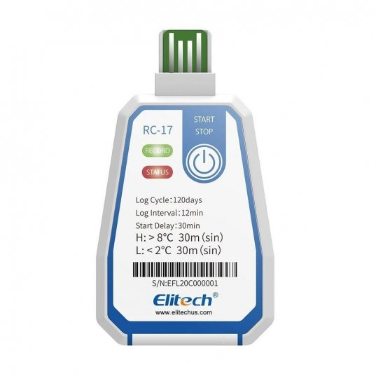

RC-17

O Termômetro de registro de dados RC-17 lida com o monitoramento de temperatura para sua cadeia de abastecimento de alimentos, desde o processamento, transporte até a distribuição. Armazene até 16.000 leituras de temperatura com aviso de status de LED e design super pequeno e leve. Este registrador de temperatura descartável é embalado em uma bolsa à prova d'água, monitorando os dados sem retirá-los da bolsa.
- Acompanhe toda a cadeia de frio em tempo real e gere relatório de dados em PDF automaticamente
- Caixa fina de 8 mm - encaixa facilmente na embalagem padrão
- Relatório de dados criptografados automaticamente gerado após a inserção direta do USB em um PC ou Mac
- IP67 à prova d'água atende aos requisitos HACCP para segurança alimentar
- Alimentado por bateria de botão CR2450, conformidade com a certificação de segurança da aviação

GARANTIA:
12 meses para defeito de fabricaçãoOBS:
no caso de aplicações que demandem calibração por órgãos certificadores, fica a cargo do cliente a calibração.ESPECIFICAÇÕES
Faixa de Medição de Temperatura

-30℃~70℃/-22℉~158℉
Precisão

±0.5℃/±0.9℉（-20℃~40℃/-4℉~104℉); 1℃/1.8℉
Capacidade de Gravação

16000 leituras (MAX)
Tipo de relatório

Formato PDF
Sensor

NTC interno
Interface

USB2.0
Fonte de Energia

Bateria de lítio de temperatura ampla CR2450 integrada
Tamanho

93 mm (L) x 58 mm (L) x 8 mm (A)